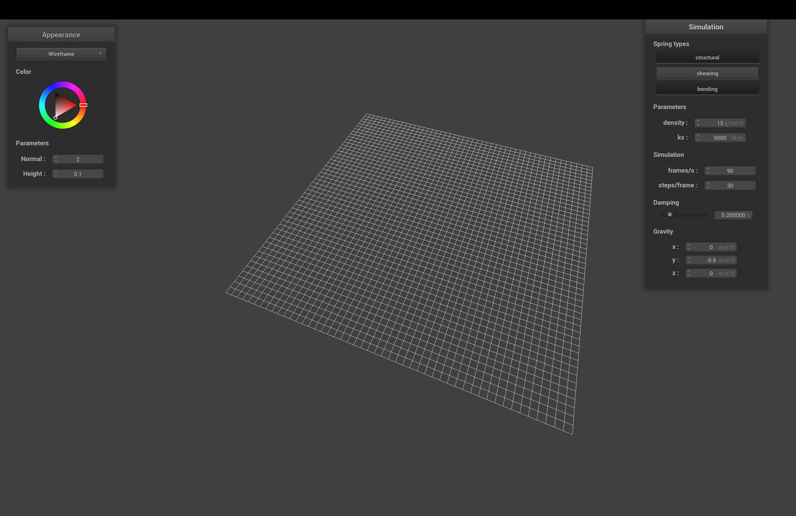
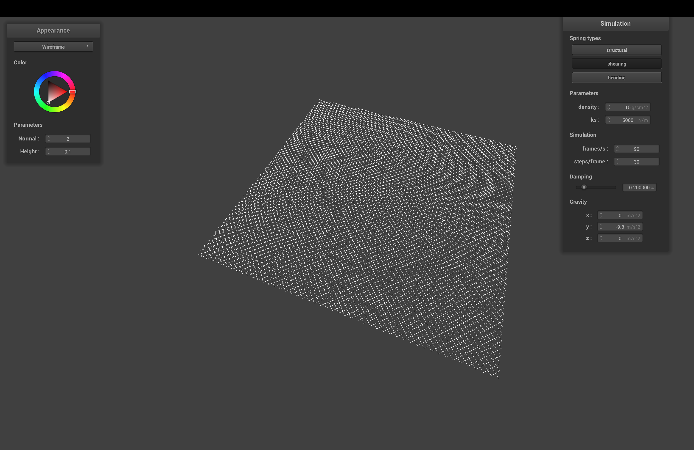
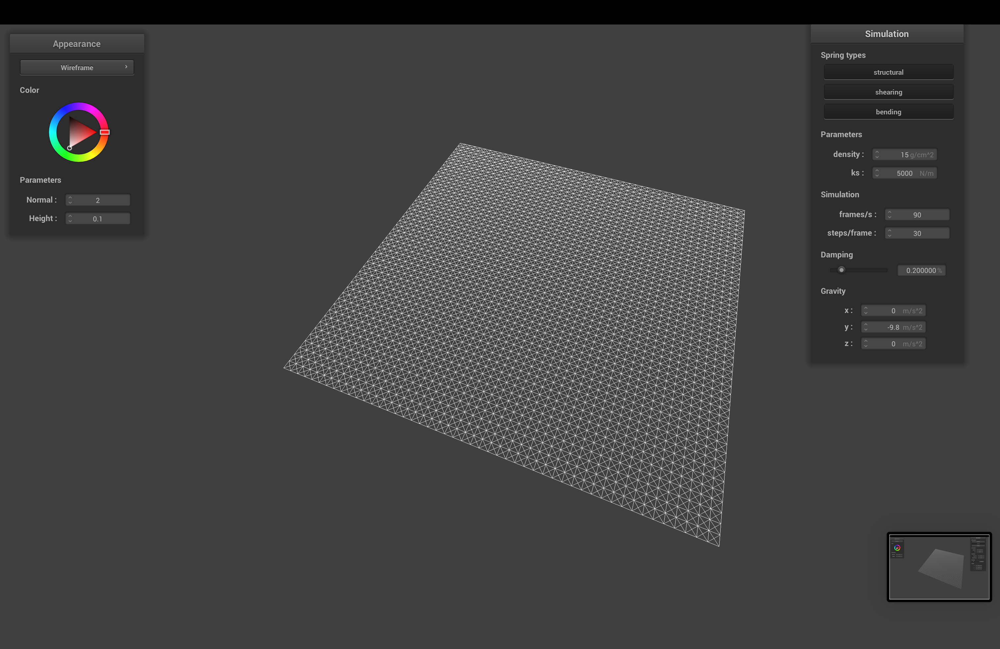

Overview
Give a high-level overview of what you implemented in this project. Think about what you've built as a
whole. Share your thoughts on what interesting things you've learned from completing the project.
Part I: Masses and springs
Take some screenshots of scene/pinned2.json from a viewing angle where you can clearly see the cloth
wireframe to show the structure of your point masses and springs.
Show us what the wireframe looks like (1) without any shearing constraints, (2) with only shearing constraints, and (3) with all constraints.
|

(1) without any shearing constraints
|

(2) with only shearing constraints
|
|

(3) with all constraints
|